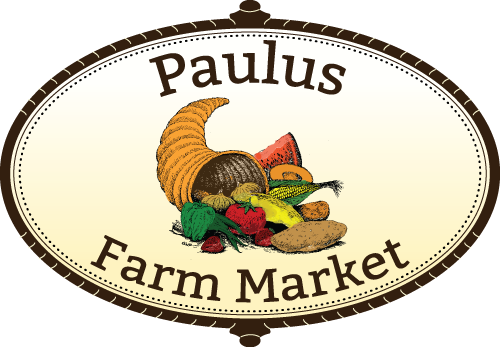

Fresh produce done right by Paulus Farm Market in Mechanicsburg, PA. Every job comes with a straight answer and a fair price - call (717) 697-4330 or start with a free quote below.
Plan a visit See our work